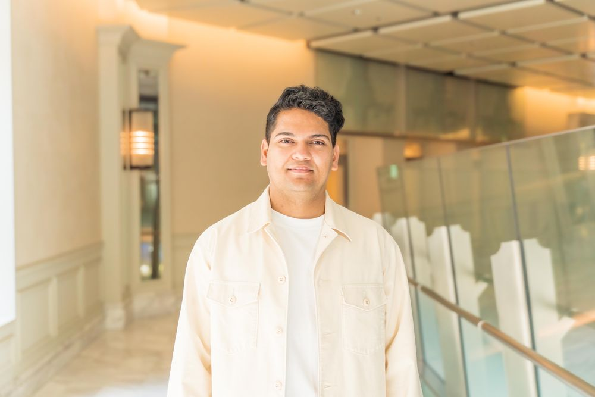

Moving intelligence
Autonomous mobility
How pedestrians and passengers understand and respond to vehicle intent.

The University of Tokyo Department of Creative Informatics
Tsukada Laboratory
About
I'm an HCI researcher studying how humans interact with autonomous vehicles, robots, and intelligent systems — and how these systems can communicate back more clearly. My research at The University of Tokyo centers on the Smart Pole Interaction Unit (SPIU), an infrastructure-based eHMI I designed to make communication between pedestrians, autonomous vehicles, and robots safer and more intuitive in the spaces they share. I build with AI, but I design for Human Intelligence — the judgment, context, and care that machines don't have.
Along the way, I’ve been fortunate to collaborate with inspiring researchers and research groups across Japan, Singapore, Canada, Norway, and beyond. These collaborations continue to shape how I think about future cities and how humans and machines can share them.
Before my PhD, I completed my Master at The University of Tokyo and my Bachelor split between Vel Tech University (India) and Nanyang Technological University (Singapore). I also contribute to Tier IV's open-source autonomous driving platform, working with their engineering team. So far that is 136 merged contributions across seven Autoware Foundation repositories.
Recent
Research agenda
I design how people understand, trust, and collaborate with autonomous vehicles, robots, and connected urban environments—using emerging technologies to create safer and more meaningful everyday interactions.
Moving intelligence
How pedestrians and passengers understand and respond to vehicle intent.
Embodied intelligence
How robots communicate, navigate, and cooperate with people in everyday environments.
Urban intelligence
How interactive infrastructure coordinates people and machines across future cities.
Designing intelligence
How user research, sketching, prototyping, and evaluation turn ideas into experiences people can use and trust.
Emerging technologies The shared research foundation
Service
Teaching & mentoring
Curating events and promotional videos for IST School's Creative Evolution Project; designing activities as a volunteer to foster inclusivity; running research-talk sessions among students.
Team lead for an interdisciplinary student team competing on a mobility business challenge.
Publications
CHI 2026
Barcelona
We put a mobile SPIU on a real street with 21 people. The pole and the car’s own eHMI worked best together.
CHI 2026
Barcelona
Twenty people and twenty VLM personas made the same crossing decisions. Where can personas stand in for people, and where can’t they?
VRST 2025
Montréal
Forty people in Japan and Norway, four risky scenarios. The pole shortened decisions, and culture changed how much.
IJHCS 2025
vol. 205
Twenty-five people designed with us; three LLMs answered the same questions. The models talked about safety more and understood it less.
Smart pole
The ring display went from CAD to a printed frame to a workshop drawing before it ever said WALK on a street.


Technical drawing by me (2025).
Collaborate
Right now I am building co-walker robots for Japan’s sidewalks: service robots whose intentions people can read at a glance. It is a JST ACT-X project (2026–2028), and I am its principal investigator.
Students, tell me which paper brought you here. Researchers, I like studies that cross cultures or leave the lab. Cities and companies, I want these interfaces on real streets.
Contact